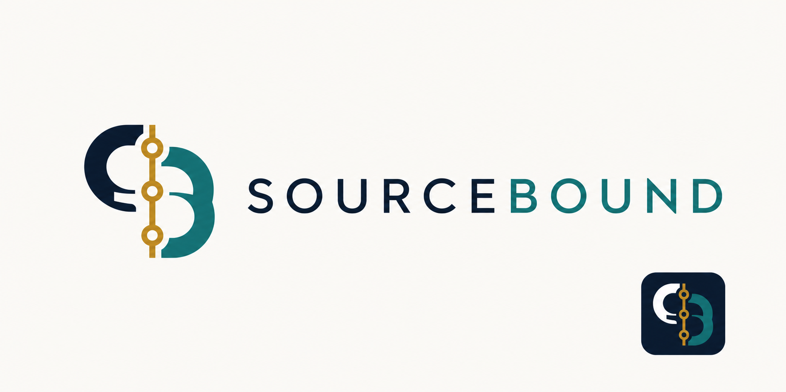

Sourcebound free A
Saved path: assets/logos/sourcebound-03-free-logo-concept-a.png
Explanation. A custom S/B monogram is split by a source spine with citation nodes.
Usage notes. Useful as a bridge from literal source trails to a real brand mark.
Strengths. More ownable than the first round and clearly connected to provenance.
Weaknesses. Still leans on initials and a node spine, so it may feel familiar after several concepts.
Modes. Light mode works; create a simpler dark and mono version.
Favicon. Strong at app-icon scale if the source spine is simplified.
Exact prompt
You are a senior identity designer creating a real brand logo, not an explanatory diagram. Create a distinctive logo concept for SOURCEBOUND, a source-cited investigation intelligence product. You have creative freedom: the mark can be abstract, monogrammatic, typographic, negative-space, or symbolic. It should imply provenance, evidence being held to its source, and disciplined investigation, but it should not literally show a stack of documents or a network diagram unless you make it highly abstract. Make it feel premium, calm, serious, memorable, and ownable for enterprise software. Avoid owls, eyes, magnifying glasses, shields, gavels, checkmarks, generic AI sparkles, and overused tech gradients. Include a polished wordmark reading SOURCEBOUND and one strong standalone symbol that could work as an app icon. Flat brand presentation on a clean background, logo-like, vector-like, balanced, high legibility.